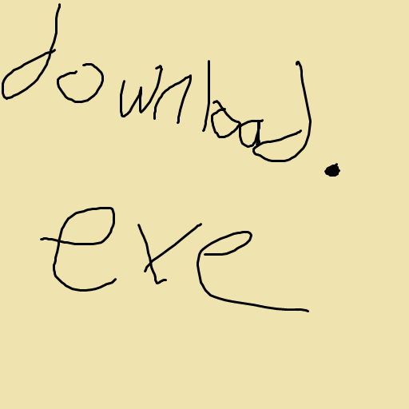

GitHub
GitHub

download.exe
A handy tool for downloading packages. Made by trisiegt!
Join the Discord server at https://discord.gg/V9DdGqtBX2!
Download!How to Use
Once you've downloaded the download.exe tool, open your Command Prompt or PowerShell and navigate to the directory where you saved it. Then, you can use the following commands:
download -pkg <package_name>
Downloads the specified package from the online repository. Replace<package_name>with the actual package identifier (e.g.,com.justtrisie.schoolTool).download -pkg com.justtrisie.schoolTooldownload --clear-downloadsordownload -c
Clears all files and subfolders from your configured download directory.download --clear-downloadsdownload --reset-configordownload -rc
Resets yourconfig.inifile to its default settings. Note that this will delete your current configuration.download --reset-configdownload --resetordownload -r
Performs both a clear of the download folder and a reset of yourconfig.inifile.download --reset
config.ini
The config.ini file is used to configure the settings of download.exe.
By default, it is as following:
[Settings]
DownloadPath = C:\Downloads
ConsoleForegroundColor = White
ConsoleBackgroundColor = Black
LogLevel = Info
LogFilePath = F:\code\visual studio 2022\source\repos\download\download\bin\x64\Debug\downloader.log
; --- Notes on Colors ---
; Valid Console Colors:
; Black, DarkBlue, DarkGreen, DarkCyan, DarkRed, DarkMagenta, DarkYellow, Gray,
; DarkGray, Blue, Green, Cyan, Red, Magenta, Yellow, White
Note: You can combine commands, but some actions (like resetting config) might cause the program to exit early to apply new settings.